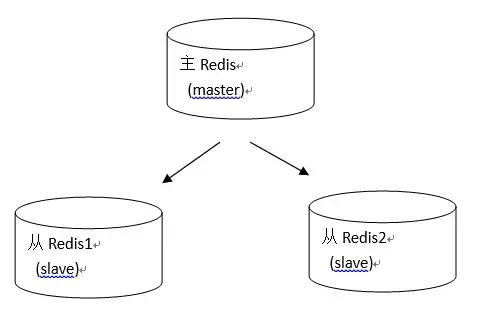
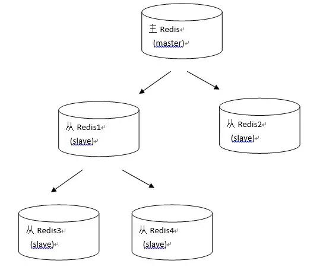
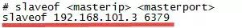
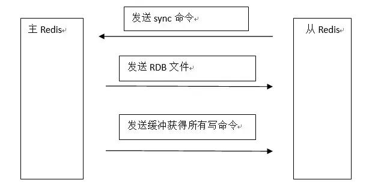
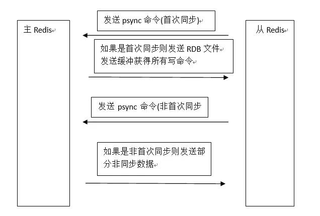
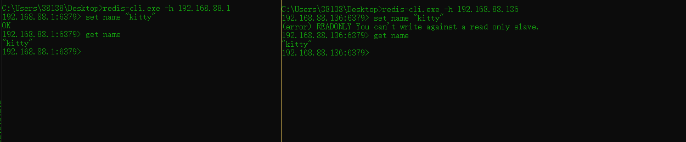
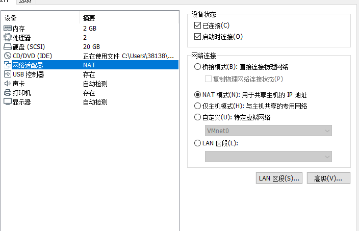
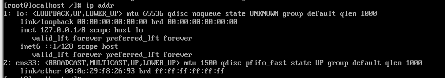
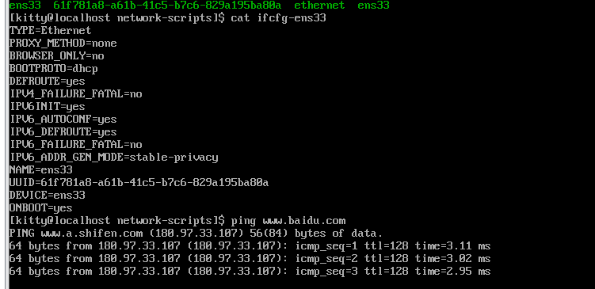
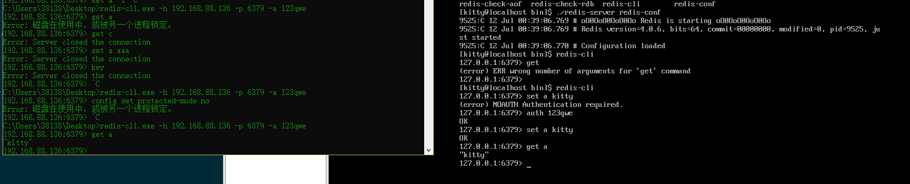

什么是主从复制
持久化保证了即使 redis 服务重启也会丢失数据，因为 redis 服务重启后会将硬盘上持久化的数据恢复到内存中，但是当 redis 服务器的硬盘损坏了可能会导致数据丢失，如果通过 redis 的主从复制机制就可以避免这种单点故障，如下图：

说明：
- 主 redis 中的数据有两个副本（replication）即从 redis1 和从 redis2，即使一台 redis 服务器宕机其它两台 redis 服务也可以继续提供服务。
- 主 redis 中的数据和从 redis 上的数据保持实时同步，当主 redis 写入数据时通过主从复制机制会复制到两个从 redis 服务上。
- 只有一个主 redis，可以有多个从 redis。
- 主从复制不会阻塞 master，在同步数据时，master 可以继续处理 client 请求。
- 一个 redis 可以即是主又是从，如下图：

主从配置
1、主 redis 配置
无需特殊配置。
2、从redis配置
修改从 redis 服务器上的 redis.conf 文件，添加 slaveof 主 redisip 主 redis 端口。

上边的配置说明当前该从 redis 服务器所对应的主 redis 是192.168.101.3，端口是6379
主从复制过程
1、完整复制过程
在 redis2.8 版本之前主从复制过程如下图：

复制过程说明：
- slave 服务启动，slave 会建立和 master 的连接，发送 sync 命令。
- master 启动一个后台进程将数据库快照保存到 RDB 文件中
注意：此时如果生成 RDB 文件过程中存在写数据操作会导致 RDB 文件和当前主 redis 数据不一致，所以此时 master 主进程会开始收集写命令并缓存起来。
- master 就发送 RDB 文件给 slave
- slave 将文件保存到磁盘上，然后加载到内存恢复
- master 把缓存的命令转发给 slave
注意：后续 master 收到的写命令都会通过开始建立的连接发送给 slave。
当 master 和 slave 的连接断开时 slave 可以自动重新建立连接。如果 master 同时收到多个 slave 发来的同步连接命令，只会启动一个进程来写数据库镜像，然后发送给所有 slave。
完整复制的问题：
在 redis2.8 之前从 redis 每次同步都会从主 redis 中复制全部的数据，如果从 redis 是新创建的从主 redis 中复制全部的数据这是没有问题的，但是，如果当从 redis 停止运行，再启动时可能只有少部分数据和主 redis 不同步，此时启动 redis 仍然会从主 redis 复制全部数据，这样的性能肯定没有只复制那一小部分不同步的数据高。
2、部分复制

部分复制说明：
从机连接主机后，会主动发起 PSYNC 命令，从机会提供 master 的 runid(机器标识，随机生成的一个串) 和 offset（数据偏移量，如果offset主从不一致则说明数据不同步），主机验证 runid 和 offset 是否有效，runid 相当于主机身份验证码，用来验证从机上一次连接的主机，如果 runid 验证未通过则，则进行全同步，如果验证通过则说明曾经同步过，根据 offset 同步部分数据。
切记如果从机有密码 需要另外配置，否则只要修改salveof ip+端口就行
如果主机设置了密码则：查找/masterauth 回车搜索masterauth <master-password>的下一行
masterauth 主机密码 如：masterauth beijing

网络配置
CentOS7 取消了中已经取消了ifconfig，用nmcli进行了代替，服务管理也升级为systemd
首先虚拟机采用NAT模式

因为是minimal版本，所以ifconfig没有，先通过ip address

找到了ens33,然后输入
cd /etc/sysconfig/network-scripts/
ls通过
nmcli connection show发现device是空的
我们需要做的是vi ifcfg-ens33
里面内容是
TYPE=Ethernet (类型：以太网)
RPOXY_METHOD=none (代理方式：无)
BROWSER_ONLY=no (仅限于浏览器：否)
BOOTPROTO=dhcp (网络配置参数：dhcp意为自动获取，此处改为static表示设置静态IP)
DEFROUTE=yes (默认路由：是)
IPV4_FAILURE_FATAL=no
IPV6INIT=yes
IPV6_AUTOCONF=yes
IPV6_DEFROUTE=yes
IPV6_PEERDNS=yes
IPV6_PEERROUTES=yes
IPV6_FAILURE_FATAL=no
IPV6_ADDR_GEN_MODE=stable-privacy
NAME=ens33 (名字：ens33)
UUID=b39f9e9e-f63d-4845-81ed-45c8a85bb0d3 ( 通用标示码)
DEVICE=ens33 (设备：ens33)
ONBOOT=no (开机是否自动启用配置：这里要改成yes)我们只要把最后的no改成yes,然后service network restart,即可

关闭防火墙-redis外部访问
查看防火墙状态： systemctl status firewalld.service
执行关闭命令： systemctl stop firewalld.service
再次执行查看防火墙命令：systemctl status firewalld.service
执行开机禁用防火墙自启命令 ： systemctl disable firewalld.service配置远程访问
一、修改 redis.conf
1、将 bind 127.0.0.1 ::1 这一行注释掉。
这里的bind指的是只有指定的网段才能远程访问这个redis。 注释掉后，就没有这个限制了。
或者bind 自己所在的网段
Linux Redis启用远程连接
2、将 protected-mode 要设置成no （默认是设置成yes的， 防止了远程访问，在redis3.2.3版本后）
Linux Redis启用远程连接
3、设置远程连接密码
取消注释 requirepass foobared
将 foobared 改成任意密码，用于验证登录
默认是没有密码的就可以访问的，我们这里最好设置一个密码
Linux Redis启用远程连接
4、daemonize yes
设置为yes就没那个很烦的窗口
5、重启 reids
启动redis-server 的时候 一定要加上你自己配置的redis-config

python3
首先安装依赖包
yum -y groupinstall "Development tools"
yum -y install zlib-devel bzip2-devel openssl-devel ncurses-devel sqlite-devel readline-devel tk-devel gdbm-devel db4-devel libpcap-devel xz-devel然后根据自己需求下载不同版本的Python3，我下载的是Python3.6.2
wget https://www.python.org/ftp/python/3.6.2/Python-3.6.2.tar.xz如果速度不够快，可以直接去官网下载，利用WinSCP等软件传到服务器上指定位置，我的存放目录是/usr/local/python3，使用命令：
mkdir /usr/local/python3 建立一个空文件夹
然后解压压缩包，进入该目录，安装Python3
tar -xvJf Python-3.6.2.tar.xz
cd Python-3.6.2
./configure --prefix=/usr/local/python3
make && make install最后创建软链接
ln -s /usr/local/python3/bin/python3 /usr/bin/python3
ln -s /usr/local/python3/bin/pip3 /usr/bin/pip3安装pip
没有可用软件包 python-pip。就执行命令 yum -y install epel-release 。然后再执行 yum install python-pip
jdk
第一步：下载jre
我们去oracle官方下载下jre
http://www.oracle.com/technetwork/java/javase/downloads/server-jre8-downloads-2133154.html
下载 server jre
第二步：上传jre到/home/data/下
第三步：解压以及剪切到/home/java/目录
[root@localhost ~]# cd /home/data/
[root@localhost data]# ls
server-jre-8u131-linux-x64.tar.gz
[root@localhost data]# tar -zxvf server-jre-8u131-linux-x64.tar.gz
进入/home/data/ 解压tar.gz压缩包
[root@localhost data]# ls
jdk1.8.0_131 server-jre-8u131-linux-x64.tar.gz
[root@localhost ~]# mkdir /home/java
root@localhost ~]# mv /home/data/jdk1.8.0_131/ /home/java/
[root@localhost ~]# ls /home/java/
jdk1.8.0_131第四步：jre目录以及子目录授予root权限
chown root:root -R /home/java/jdk1.8.0_131/第五步：配置环境变量
编辑环境变量配置文件
vi /etc/profile 在文件末尾加入下面代码，强制保存（w!）退出
export JAVA_HOME=/home/java
export JRE_HOME=/home/java/jdk1.8.0_131
export CLASSPATH=$JRE_HOME/lib/rt.jar:$JRE_HOME/lib/ext
export PATH=$PATH:$JRE_HOME/bin使环境变量即时生效
source /etc/profile第六步：测试
[root@localhost ~]# java -version